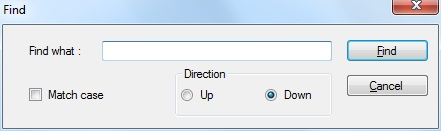
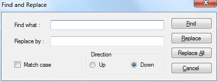

Gab Encoding Converter propose some simple find and replace functions in either the source file or the destination file part of the document window.
The Gab Encoding Converter find window is very simple and straightforward, as you can see on the picture below :
It features the following options :
If found, the searched text will be highlighted in the document and the document will be scrolled at the position of the found token. When nothing can be found or if the search reaches the end of the document, a system beep will be heard.
You can use the following shortcuts to display the Find window:
Notes : If none of the two panes got the focus when you try to display the Find window, the Source file textbox will be used by default.
The Gab Encoding Converter replace window is also very simple and straightforward, as you can see on the picture below :
It features the following options :
This window is behaving quite like the Find window except it has a replace textbox and two additional buttons "Replace" and "Replace all".
You can use the following shortcuts to display the Replace window:
Notes : If none of the two panes got the focus when you try to display the Replace window, the Source file textbox will be used by default.